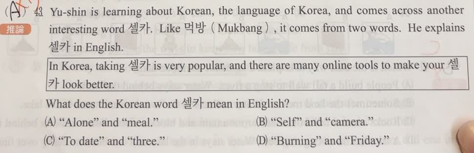

分享原卷｜第 43 題
完整原題
作答所需文章／材料
Mukbang: Why Do People Watch Others Eat? Mukbang is a new kind of online show. In these videos, people eat a lot of food while talking to their viewers. Many fans sit in front of a computer and watch them eat. In most countries, eating is a time for family and friends to get together and have some fun. People share food, stories, and joy. But some people eat alone and feel lonely. In South Korea, many people live alone, but eating alone is still not a common habit. Because of this, Mukbang becomes very popular. Mukbang started in 2010 on a Korean website, AfreecaTV. The word “Mukbang”（먹방）comes from two Korean words: 먹（meok, meaning “eat”）and 방송（bangsong, meaning “broadcast”）. It means eating on live videos. Watching someone eat and talk makes people feel like they are eating together, even if they are alone. Some people worry that Mukbang can make viewers eat too much. In South Korea, the number of overweight people grew from 26% in 1998 to 35% in 2016. In 2018, Korea made rules to help people eat healthier and watch Mukbang safely. However, some people still think the number may grow more by 2030. Even with these worries, thousands of people watch their favorite Mukbang programs every day. Many enjoy the food, the talk and the feeling of not being alone. 字詞：viewer 觀眾；website 網站；broadcast 廣播；overweight 肥胖的；feeling 感覺。Yu-shin is learning about Korean, the language of Korea, and comes across another interesting word 셀카. Like 먹방（Mukbang）, it comes from two words. He explains 셀카 in English.
In Korea, taking 셀카 is very popular, and there are many online tools to make your 셀카 look better.
What does the Korean word 셀카 mean in English?
(A) “Alone” and “meal.”
(B) “Self” and “camera.”
(C) “To date” and “three.”
(D) “Burning” and “Friday.”
先想一想，再查看答案、解說與原圖
原卷作答：A；紅筆訂正B
正確答案：B。self與camera組成自拍相關詞；taking及look better都指向照片。
逐項解析
| 選項與原句 | 判讀 | 句意與判斷理由 |
|---|---|---|
| (A) “Alone” and “meal.” | 不選 | 獨自吃飯雖出現在吃播文章，卻不能解釋taking及用工具改善外觀的線索。 |
| (B) “Self” and “camera.” | 應選 | self與camera組成自拍相關詞；taking及look better都指向照片。 |
| (C) “To date” and “three.” | 不選 | 約會與三不符合題目給的攝影情境。 |
| (D) “Burning” and “Friday.” | 不選 | 燃燒與星期五不符合題目給的攝影情境。 |
詳細說明與解題步驟
不必先學過韓文，從兩個英文線索推論：taking表示拍攝；online tools…look better表示可用線上工具讓拍出的影像更好看，因此是自拍，對應self＋camera，選B。
題目用먹방由兩個詞組成的例子，引導推測另一個合成詞；不是要把所有韓文字都解釋成吃飯。
文章大意：吃播讓獨自用餐的人有陪伴感，觀眾喜歡食物、談話與不孤單的感覺；另一方面，有人擔心它使人吃得過多。文中同時呈現吸引力與疑慮。這是依原題文章作閱讀理解，不將文中的人口比例或規定當成現況資料，也不能僅憑兩個年代的比例就證明吃播造成肥胖。
核對註記：已核對題幹、全部選項與必要材料；教材對應課次未確認，歸綜合。
原圖（僅本題）

